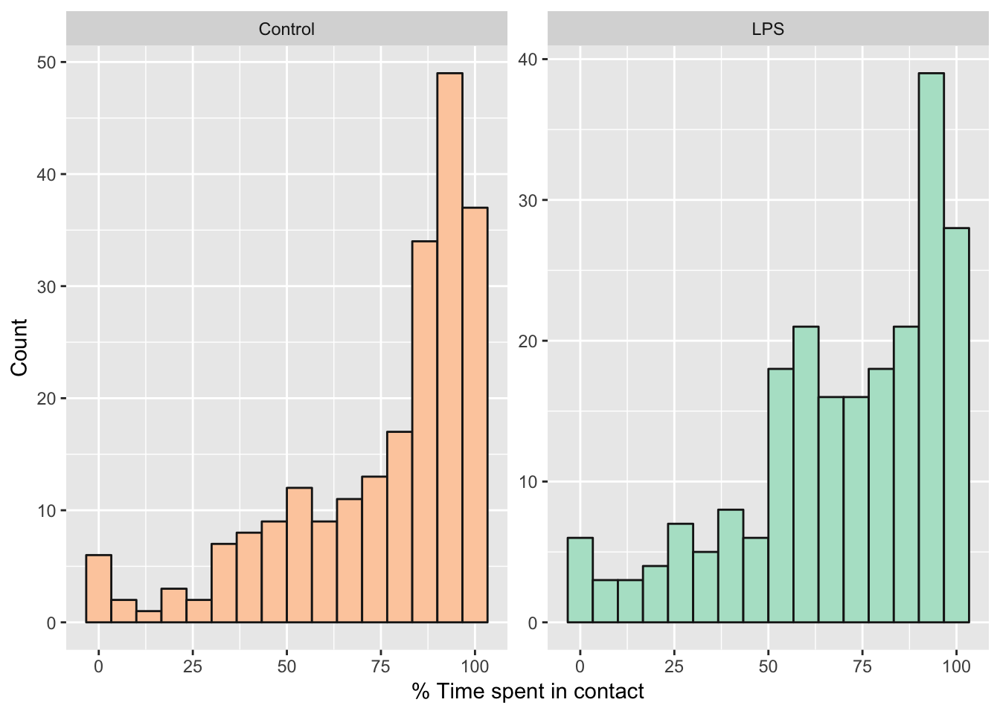

Analysis of Experiment 1
Last updated: 2019-10-17
Checks: 7 0
Knit directory: LPS_honeybees/
This reproducible R Markdown analysis was created with workflowr (version 1.4.0). The Checks tab describes the reproducibility checks that were applied when the results were created. The Past versions tab lists the development history.
Great! Since the R Markdown file has been committed to the Git repository, you know the exact version of the code that produced these results.
Great job! The global environment was empty. Objects defined in the global environment can affect the analysis in your R Markdown file in unknown ways. For reproduciblity it’s best to always run the code in an empty environment.
The command set.seed(20190701) was run prior to running the code in the R Markdown file. Setting a seed ensures that any results that rely on randomness, e.g. subsampling or permutations, are reproducible.
Great job! Recording the operating system, R version, and package versions is critical for reproducibility.
Nice! There were no cached chunks for this analysis, so you can be confident that you successfully produced the results during this run.
Great job! Using relative paths to the files within your workflowr project makes it easier to run your code on other machines.
Great! You are using Git for version control. Tracking code development and connecting the code version to the results is critical for reproducibility. The version displayed above was the version of the Git repository at the time these results were generated.
Note that you need to be careful to ensure that all relevant files for the analysis have been committed to Git prior to generating the results (you can use wflow_publish or wflow_git_commit). workflowr only checks the R Markdown file, but you know if there are other scripts or data files that it depends on. Below is the status of the Git repository when the results were generated:
Ignored files:
Ignored: .DS_Store
Ignored: .Rhistory
Ignored: .Rproj.user/
Ignored: data/.DS_Store
Note that any generated files, e.g. HTML, png, CSS, etc., are not included in this status report because it is ok for generated content to have uncommitted changes.
These are the previous versions of the R Markdown and HTML files. If you’ve configured a remote Git repository (see ?wflow_git_remote), click on the hyperlinks in the table below to view them.
| File | Version | Author | Date | Message |
|---|---|---|---|---|
| html | 8c02129 | lukeholman | 2019-10-17 | Commit for thesis |
| Rmd | 367c1bd | lukeholman | 2019-09-30 | First big commit |
Load data and R packages
library(brms)
library(bayesplot)
library(tidyverse)
library(gridExtra)
library(kableExtra)
library(bayestestR)
# library(ggbeeswarm)
library(tidybayes)
source("code/helper_functions.R")
files <- c("data/data_collection_sheets/hiveA_touching.csv",
"data/data_collection_sheets/hiveB_touching.csv",
"data/data_collection_sheets/hiveC_touching.csv",
"data/data_collection_sheets/hiveD_touching.csv")
experiment3 <- map(
files,
~ read_csv(.x) %>%
gather(minute, touching, -tube) %>%
mutate(treatment = ifelse(substr(tube, 1, 1) %in% c("A", "B"), "AB", "CD"),
minute = as.numeric(minute),
touching = as.integer(touching),
hive = gsub("hive", "", str_extract(.x, "hive[ABCD]")),
tube = paste(hive, tube, sep = "_"))
) %>% bind_rows() %>%
mutate(treatment = replace(treatment, treatment == "AB" & hive %in% c("A", "B"), "Control"),
treatment = replace(treatment, treatment == "AB" & hive %in% c("C", "D"), "LPS"),
treatment = replace(treatment, treatment == "CD" & hive %in% c("A", "B"), "LPS"),
treatment = replace(treatment, treatment == "CD" & hive %in% c("C", "D"), "Control")) %>%
mutate(hive = replace(hive, hive == "A", "Garden"),
hive = replace(hive, hive == "B", "Skylab"),
hive = replace(hive, hive == "C", "Arts"),
hive = replace(hive, hive == "D", "Zoology"))
expt3_counts <- experiment3 %>%
group_by(treatment, tube, hive) %>%
summarise(n_touching = sum(touching),
n_not_touching = sum(touching== 0),
percent = n_touching / (n_touching + n_not_touching)) %>%
ungroup() %>%
filter(!is.na(n_touching))Inspect the raw data
Table format
expt3_counts %>%
group_by(hive, treatment) %>%
summarise(pc = mean(100 * percent),
SE = sd(percent) /sqrt(n()),
n = n()) %>%
rename(`Mean % observations in which bees were in contact` = pc,
Hive = hive, Treatment = treatment) %>%
kable(digits = 3) %>% kable_styling() %>%
scroll_box(height = "380px")| Hive | Treatment | Mean % observations in which bees were in contact | SE | n |
|---|---|---|---|---|
| Arts | Control | 69.509 | 0.036 | 50 |
| Arts | LPS | 72.547 | 0.033 | 50 |
| Garden | Control | 76.752 | 0.033 | 70 |
| Garden | LPS | 68.895 | 0.037 | 70 |
| Skylab | Control | 70.509 | 0.040 | 50 |
| Skylab | LPS | 65.653 | 0.034 | 49 |
| Zoology | Control | 84.075 | 0.021 | 50 |
| Zoology | LPS | 73.019 | 0.037 | 50 |
Plotted as a histogram
ggplot(expt3_counts, aes(100 * percent, fill = treatment)) +
geom_histogram(colour = "grey10", bins = 16) +
scale_fill_brewer(palette = "Pastel2", direction = -1) +
facet_wrap(~treatment, scales = "free_y") +
xlab("% Time spent in contact") + ylab("Count") +
theme(legend.position = "none")
Binomial model of time spent in contact
Run the models
Fit a binomial model, where the response is either a 0 (if bees were not in contact) or 1 (if they were). To assess the effects of our predictor variables, we compare 5 models with different fixed factors, ranking them by posterior model probability.
if(!file.exists("output/model_probabilities_expt3.rds")){
run_brms_expt3 <- function(i){
brm(as.formula(formula_list[[i]]),
data = expt3_counts %>% mutate(n = n_touching + n_not_touching),
control = list(adapt_delta = 0.9, max_treedepth = 15),
save_all_pars = TRUE,
prior = prior_list[[i]],
iter = 40000, chains = 4, cores = 4,
family = "binomial")
}
formula_list <- c(
"n_touching | trials(n) ~ treatment * hive + (1 | tube)",
"n_touching | trials(n) ~ treatment + hive + (1 | tube)",
"n_touching | trials(n) ~ treatment + (1 | tube)",
"n_touching | trials(n) ~ hive + (1 | tube)",
"n_touching | trials(n) ~ (1 | tube)")
prior_list <- list(
prior(normal(0, 2), class = 'b'),
prior(normal(0, 2), class = 'b'),
prior(normal(0, 2), class = 'b'),
prior(normal(0, 2), class = 'b'),
NULL
)
# run all 5 models, sequentially
model_list_expt3 <- lapply(1:length(formula_list), run_brms_expt3)
# Estimate the log marginal likelihood by bridge sampling, and use to determine the posterior model probabilities
# See: vignette("bridgesampling_example_stan")
model_probabilities <- post_prob(model_list_expt3[[1]],
model_list_expt3[[2]],
model_list_expt3[[3]],
model_list_expt3[[4]],
model_list_expt3[[5]])
top_index <- which.max(unname(model_probabilities))
model_probabilities <- tibble(
`Fixed effects` = formula_list,
`Posterior model probability` = unname(model_probabilities)) %>%
arrange(-`Posterior model probability`)
model_probabilities <- model_probabilities %>%
mutate(`% of top model probability` = round(100 * `Posterior model probability` / `Posterior model probability`[1], 1),
`% of top model probability` = c("-", `% of top model probability`[2:length(`% of top model probability`)]))
saveRDS(model_list_expt3[[1]], "output/full_model_expt3.rds")
saveRDS(model_list_expt3[[3]], "output/treatment_model_expt3.rds")
saveRDS(model_probabilities, "output/model_probabilities_expt3.rds")
}
treatment_model <- readRDS("output/treatment_model_expt3.rds")
model_probabilities <- readRDS("output/model_probabilities_expt3.rds")Posterior model probabilites
model_probabilities %>%
kable(digits = 3) %>% kable_styling()| Fixed effects | Posterior model probability | % of top model probability |
|---|---|---|
| n_touching | trials(n) ~ (1 | tube) | 0.624 |
|
| n_touching | trials(n) ~ treatment + (1 | tube) | 0.358 | 57.3 |
| n_touching | trials(n) ~ hive + (1 | tube) | 0.011 | 1.8 |
| n_touching | trials(n) ~ treatment + hive + (1 | tube) | 0.006 | 1 |
| n_touching | trials(n) ~ treatment * hive + (1 | tube) | 0.000 | 0 |
Fixed effects from the top non-null model
get_fixed_effects_with_p_values(treatment_model) %>%
kable(digits = 3) %>% kable_styling()| Parameter | Estimate | Est.Error | lower_95_CI | upper_95_CI | Rhat | Bulk_ESS | Tail_ESS | p | |
|---|---|---|---|---|---|---|---|---|---|
| Intercept | 1.685 | 0.139 | 1.412 | 1.958 | 1.004 | 1542 | 3198 | 0.00 | * |
| treatmentLPS | -0.370 | 0.199 | -0.758 | 0.017 | 1.005 | 1294 | 3248 | 0.03 | * |
Plotting estimates from the model
Derive prediction from the posterior
new <- expt3_counts %>%
select(treatment) %>% distinct() %>%
mutate(n = 100, key = paste("V", 1:2, sep = ""))
preds <- fitted(treatment_model, newdata=new, re_formula = NA, summary = FALSE)
plotting_data <-
as.data.frame(preds) %>%
gather() %>%
mutate(posterior_sample = rep(1:nrow(preds), nrow(new))) %>%
left_join(new, by = "key") %>%
select(treatment, value) %>%
as_tibble()
plotting_data %>%
ggplot(aes(treatment, value)) +
geom_eye(aes(fill = treatment)) +
scale_fill_brewer(palette = "Pastel2", direction = -1) +
ylab("% time in which the bees were in close contact") +
xlab("Treatment") +
theme_bw() +
theme(legend.position = "none") 
my_summary <- function(df) {
diff <- (df %>% pull(LPS)) - (df %>% pull(Control))
LOR <- log10((df %>% pull(LPS)) / (df %>% pull(Control)))
p <- diff %>% bayestestR::p_direction() %>% as.numeric()
p <- (100 - p) / 100
diff <- diff %>% posterior_summary() %>% as_tibble()
LOR <- LOR %>% posterior_summary() %>% as_tibble()
output <- rbind(diff, LOR) %>%
mutate(p=p, Metric = c("% time in which the bees were in close contact", "LOR")) %>%
select(Metric, everything()) %>%
mutate(p = format(round(p, 4), nsmall = 4))
output$p[1] <- " "
output
}
plotting_data %>%
mutate(sample = rep(1:(n() / 2), 2)) %>%
spread(treatment, value) %>%
mutate(difference = LPS - Control) %>%
my_summary() %>%
mutate(` ` = ifelse(p < 0.05, "\\*", ""),
` ` = replace(` `, p < 0.01, "**"),
` ` = replace(` `, p < 0.001, "***"),
` ` = replace(` `, p == " ", "")) %>%
kable(digits = 3) %>% kable_styling() | Metric | Estimate | Est.Error | Q2.5 | Q97.5 | p | |
|---|---|---|---|---|---|---|
| % time in which the bees were in close contact | -5.524 | 2.996 | -11.462 | 0.251 | ||
| LOR | -0.030 | 0.016 | -0.062 | 0.001 | 0.0302 | * |
Table XX: Pairs in which one bee had received LPS were observed in close contact less frequently than pairs in which one bee had received Ringers solution.
sessionInfo()R version 3.5.1 (2018-07-02)
Platform: x86_64-apple-darwin15.6.0 (64-bit)
Running under: macOS High Sierra 10.13.6
Matrix products: default
BLAS: /Library/Frameworks/R.framework/Versions/3.5/Resources/lib/libRblas.0.dylib
LAPACK: /Library/Frameworks/R.framework/Versions/3.5/Resources/lib/libRlapack.dylib
locale:
[1] en_AU.UTF-8/en_AU.UTF-8/en_AU.UTF-8/C/en_AU.UTF-8/en_AU.UTF-8
attached base packages:
[1] stats graphics grDevices utils datasets methods base
other attached packages:
[1] tidybayes_1.1.0 bayestestR_0.2.2 kableExtra_0.9.0 gridExtra_2.3
[5] forcats_0.4.0 stringr_1.4.0 dplyr_0.8.3 purrr_0.3.2
[9] readr_1.1.1 tidyr_0.8.2 tibble_2.1.3 ggplot2_3.1.0
[13] tidyverse_1.2.1 bayesplot_1.6.0 brms_2.10.0 Rcpp_1.0.2
loaded via a namespace (and not attached):
[1] colorspace_1.3-2 ggridges_0.5.0
[3] rsconnect_0.8.8 rprojroot_1.3-2
[5] ggstance_0.3.1 markdown_1.0
[7] base64enc_0.1-3 fs_1.3.1
[9] rstudioapi_0.10 rstan_2.19.2
[11] svUnit_0.7-12 DT_0.4
[13] mvtnorm_1.0-11 lubridate_1.7.4
[15] xml2_1.2.0 bridgesampling_0.4-0
[17] knitr_1.23 shinythemes_1.1.1
[19] jsonlite_1.6 workflowr_1.4.0
[21] broom_0.5.0 shiny_1.3.2
[23] compiler_3.5.1 httr_1.4.0
[25] backports_1.1.2 assertthat_0.2.1
[27] Matrix_1.2-14 lazyeval_0.2.2
[29] cli_1.1.0 later_0.8.0
[31] htmltools_0.3.6 prettyunits_1.0.2
[33] tools_3.5.1 igraph_1.2.1
[35] coda_0.19-2 gtable_0.2.0
[37] glue_1.3.1.9000 reshape2_1.4.3
[39] cellranger_1.1.0 nlme_3.1-137
[41] crosstalk_1.0.0 insight_0.3.0
[43] xfun_0.8 ps_1.3.0
[45] rvest_0.3.2 mime_0.7
[47] miniUI_0.1.1.1 gtools_3.8.1
[49] zoo_1.8-3 scales_1.0.0
[51] colourpicker_1.0 hms_0.4.2
[53] promises_1.0.1 Brobdingnag_1.2-5
[55] parallel_3.5.1 inline_0.3.15
[57] shinystan_2.5.0 RColorBrewer_1.1-2
[59] yaml_2.2.0 loo_2.1.0
[61] StanHeaders_2.19.0 stringi_1.4.3
[63] highr_0.8 dygraphs_1.1.1.6
[65] pkgbuild_1.0.2 rlang_0.4.0
[67] pkgconfig_2.0.2 matrixStats_0.54.0
[69] evaluate_0.14 lattice_0.20-35
[71] rstantools_2.0.0 htmlwidgets_1.3
[73] labeling_0.3 processx_3.2.1
[75] tidyselect_0.2.5 plyr_1.8.4
[77] magrittr_1.5 R6_2.4.0
[79] pillar_1.3.1.9000 haven_1.1.2
[81] whisker_0.3-2 withr_2.1.2
[83] xts_0.11-0 abind_1.4-5
[85] modelr_0.1.2 crayon_1.3.4
[87] arrayhelpers_1.0-20160527 rmarkdown_1.13
[89] grid_3.5.1 readxl_1.1.0
[91] callr_2.0.4 git2r_0.23.0
[93] threejs_0.3.1 digest_0.6.20
[95] xtable_1.8-4 httpuv_1.5.1
[97] stats4_3.5.1 munsell_0.5.0
[99] viridisLite_0.3.0 shinyjs_1.0